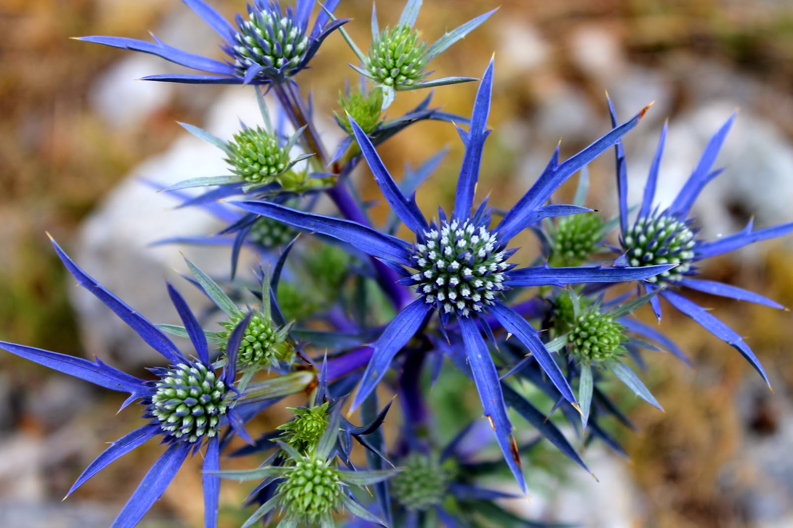

A flora e a fauna do parque
| Flora |
Fauna |
| Agarista Híspidula:
A espécie é endêmica do Brasil, de ocorrência em Cerrado e Mata Atlântica, nos Estados do Distrito Federal, Minas Gerais, São Paulo, Paraná e Santa Catarina (Kinoshita; Romão, 2012). Grela; Brussa (2005) afirmam que a espécie
também ocorre no Uruguai. Existe também um registro de coleta da espécie para o Estado do Rio de Janeiro (Telles, E.C.C., s.n.; ESA 3992).
|
 Macaco Prego: Macaco Prego:
Sapajus é um gênero de primatas da América do Sul que inclui as espécies de macaco-prego, também chamados micos-de-topete. Os macacos do Novo Mundo do gênero Sapajus pertencem à família Cebidae, subfamíia Cebinae, e são uns
dos mais comuns primatas da América do Sul.
|
| Paepalanthus itatiaiense:
Paepalanthus é um gênero de cerca de 400 espécies de plantas da família Eriocaulaceae, ocorrendo basicamente na América do Sul e poucos locais da África. Paepalanthus chiquitensis é uma das espécies do gênero com maior distribuição
no Brasil e na América do Sul. A paepalanthus, atrai os insetos e os afoga em suas rosetas, porém nõ é capaz de digeri-los, o que deixa a duvidar se a paepalanthus é mesmo uma planta insetívora. Ambiente. A paepalanthus
é encontrada em ambientes pouco complexos, entre 800 à 1400 metros acima do nível do mar, perto de aranhas e cupinzeiros. ntre 2004 e 2013, cerca de 42 espécies consideradas até então Paepalanthus foram reclassificadas
e transformadas em espécies de um novo gênero, chamado de Actinocephalus
|
Quati:
O Quati é um mamífero, sua espécie é da mesma família do guaxinim e em características físicas eles também acabam sendo semelhantes. Com uma calda longa e nariz comprido, ele é um animal muito diferente. De comprimento, o quati
pode atingir até pouco mais de um metro e o seu peso é próximo a 4 quilos. A presença do quati está em praticamente toda a América. Portanto, é possível encontrar quatis tanto nos Estados Unidos quanto na Argentina. Eles
estão espalhados por todo o continente e habitam em vários países, inclusive aqui no Brasil. Normalmente, o quati anda em grupo de vinte e cinco e é bastante selvagem. E é fácil encontra-los em árvores, brincando entre
si. Durante a noite, eles dormem nos galhos e, durante o dia, vão em busca de alimentos. No Brasil, não é muito encontrar quatis, porém eles existem. Normalmente despertam curiosidade, especialmente por não ser um animal
muito conhecido.
|
| Fernseea itatiaiaê:
Fernseea itatiaiae is a species of flowering plant in the Bromeliaceae family. The bromeliad is endemic to the Atlantic Forest biome ( Mata Atlantica Brasileira ), located in southeastern Brazil. It is native within Minas Gerais,
Rio de Janeiro (state), and São Paulo (state). ^ "Fernseea itatiaiae (Wawra) Baker". Fernseea itatiaiae é endêmica do Brasil e ocorre somente na região da Serra da Mantiqueira próximo à divisa entre os Estados de Minas
Gerais, São Paulo e Rio de Janeiro. A espécie tem distribuição restrita (EOO=2.710,73 km²) ao Planalto do Itatiaia, onde ocorre em formações campestres e em afloramentos rochosos em elevadas altitudes, sob condições úmidas
e frias. Incêndios quase anuais prejudicam a sobrevivência da espécie e resultam em declínio contínuo da qualidade do hábitat, mesmo dentro de unidades de conservação (SNUC). A espécie está sujeita a menos de cinco situações
de ameaça.
|
Tucano-de-bico-verde:
O tucano-de-bico-verde é uma espécie de tucano nativa do Brasil, Bolívia, Argentina e Paraguai. Tais aves medem cerca de 48 centímetros de comprimento, possuindo, como o próprio nome popular indica, bico de cor verde, garganta
e peito amarelos e barriga vermelha. Também podem ser conhecidos pelo nome de tucano-de-peito-vermelho. O tucano-de-bico-verde é encontrado nas regiões sul e sudeste do Brasil, bem como no Extremo Sul da Bahia e no sul
do estado de Goiás. É bastante comum em regiões de serra, onde é avistado em pequenos bandos. São perseguidos pelos caçadores por sua carne. Vive em áreas florestadas, desde o litoral até as zonas montanhosas, incluindo
as florestas de planalto. Se alimenta de frutos, artrópodes e pequenos vertebrados, sendo que, com frequência, alimenta-se de filhotes e ovos em ninhos de outras aves. Bota de 2 a 5 ovos, incubados durante 19 dias.
|
| Actinocephalus polyanthus:
Sempre-viva-de-mil-flores é uma espécie de planta sempre-viva da família Eriocaulaceae, de beleza e importância ecológica singular, que ocorre apenas em alguns trechos do litoral e campos de altitude do sudeste e sul do Brasil.
Seu nome científico atual é Actinocephalus polyanthus .
|
Jacu:
Jacu é uma denominação dada a várias aves que pertencem ao gênero Penelope e que se distribuem pelas Américas e Central e do Sul. Algumas dessas 15 espécies estão ameaçadas de extinção, em geral devido ao desmatamento e à caça.
Considerados de grande porte, os jacus adultos chegam a medir 85 centímetros de comprimento.
|
|  Língua-de-tucano:
é uma planta nativa do cerrado e pertencente à família das Apiaceae, possui muitas propriedades benéficas para seu corpo. De nome científico eryngium campestre, a planta era facilmente encontrada no Brasil, mais precisamente
na região de São Paulo, mas infelizmente passa por ameaça de extinção em decorrência da urbanização. Além disso, a planta não apresenta floração, se integrando, portanto, facilmente às plantas de folhagens exuberantes.
De fácil manutenção, a planta perene apresenta espinhos nos segmentos laterais das folhas longas.
|
Sapo-flamenguinho:
De nome científico Melanophryniscus moreirae, e pertencente à família Bufonidae, o sapo flamenguinho é uma espécie endêmica do Brasil (ou seja, isso significa que são encontrados apenas naquele lugar, e somente naquele lugar),
sendo comumente encontrado nos estados do Rio de Janeiro, de Minas Gerais e de São Paulo, mais precisamente na Serra de Itatiaia. Por sinal, em 2007, esse anfíbio virou símbolo do Parque de Itatiaia quando este completou
70 anos. Medindo apenas 2,4 cm (os machos) e 3 cm (as fêmeas), esse sapo só é visto em altitudes superiores a 2.400 m. Não pesa mais do que 3 g de tão pequeno. É uma espécie diurna, que vive em áreas de pântano ao longo
de rios que tenham, preferencialmente, águas límpidas e frias. Ele deposita os seus ovos em poças temporárias formadas pela água da chuva, e, por enquanto, ainda não se sabe se ele é capaz de se adaptar a algum tipo de
perturbação do seu habitat natural.
|
| Amarílis:
O amarílis (Hippeastrum x hybridum) é uma planta tropical e nativa da América do Sul. Então é uma planta que está acostumada como nosso clima quente e úmido. O seu bulbo, similar à uma cebola (que também é um bulbo), funciona
como uma cápsula de planta-instantânea. Nas condições certas, ele começa a absorver água e brotar. Se você corta o bulbo, verá dentro dele todas as partes da planta, até mesmo, os botõezinhos das flores. Enquanto a planta
começa a espichar as folhas e florir, a "cebola" vai secando no processo. Enquanto isso, longe dos nossos olhos, acontece uma mágica debaixo da terra: novos bulbilhos se desenvolvem. Isso quer dizer que, diferente da tulipa,
o amarílis brotará no próximo ano e, provavelmente, surgirá mais de uma. Se já estava achando uma planta generosa, prepare-se pra ver várias flores saindo de um mesmo bulbo – é uma fartura!
|
Caxinguelê:
O caxinguelê (Sciurus aestuans), também chamado de serelepe e conhecido nos idiomas inglês e espanhol respectivamente como "Brazilian squirrel" e "ardilla de Brasil" que numa tradução livre para o português seria respectivamente
esquilo brasileiro e esquilo do Brasil, é uma espécie de esquilo florestal que mede cerca de vinte centímetros de comprimento. É endêmico da América do Sul, podendo ser encontrado no Brasil, Guiana, Guiana Francesa, Suriname,
Venezuela e nordeste da Argentina. É o único esquilo dos Pampas. Esses pequenos animais vivem sozinhos ou em pares e podem viver até quinze anos, atingindo a maturidade sexual com um ano de idade. A fêmea fica prenha uma
vez por ano e tem de um a dois filhotes. Além das copas altas, o caxinguelê escolhe locais onde exista vegetação de idade avançada, para que haja ocos nas árvores, onde habitam, reproduzem-se, guardam os filhotes e estocam
comida.
|